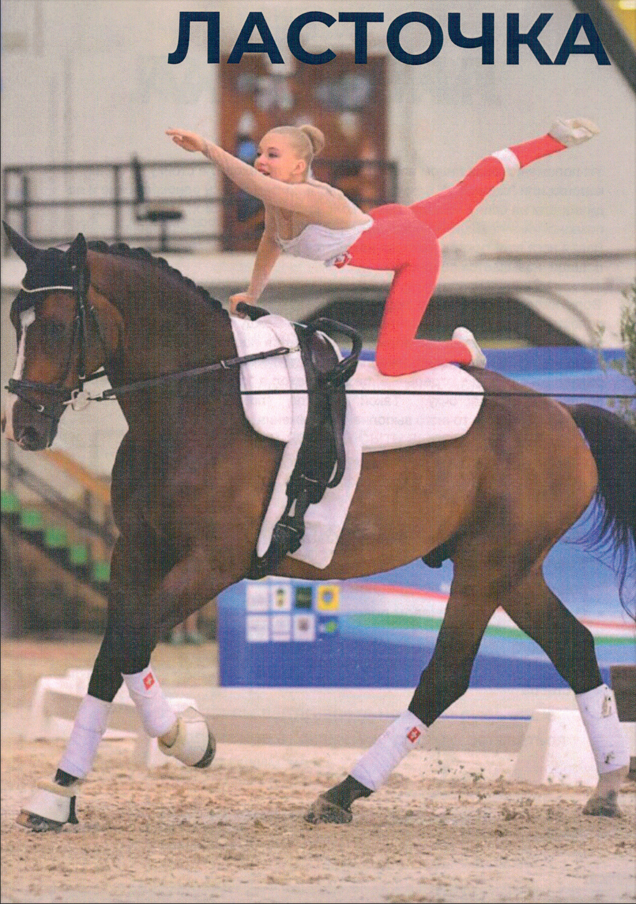
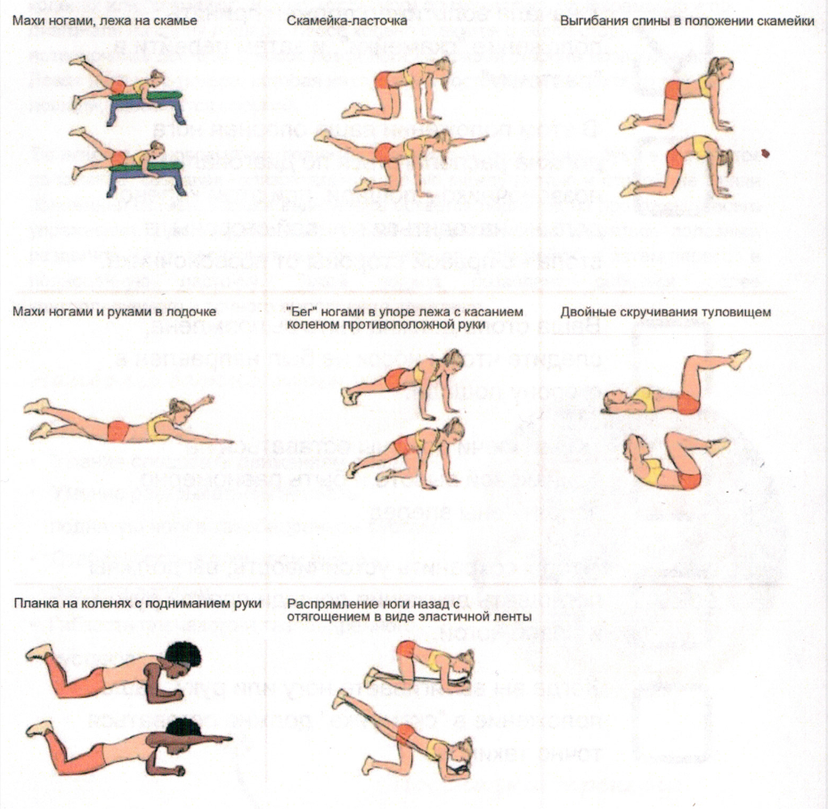

Нажмите на фото, чтобы увеличить
Вы также можете использовать это в качестве списка для самопроверки. Нужно ли улучшить какой-либо аспект?
Из положения седа лицом вперед, вольтижер переходит в стойку на коленях или "скамейку". Важно, чтобы ноги приземлялись одновременно и по диагонали на спину лошади. Левое колено ставится с левой стороны позвоночника лошади, а носок левой ноги - с правой стороны позвоночника. Левая нога вольтижера, которая находится в постоянном контакте со спиной лошади, называется опорной.
Вольтижер одновременно поднимает правую ногу и левую руку в вытянутое положение, создавая горизонтальную линию между кистью и стопой, не меняя положения скамьи. Голова вольтижера остается поднятой на протяжении всего упражнения.
Для лучшего выполнения ласточки может оказаться полезным разделить её на две отдельные фазы: переход в "скамейку", а затем переход в полноценную ласточку. Такой подход позволяет добиться более контролируемого и точного выполнения движения.
